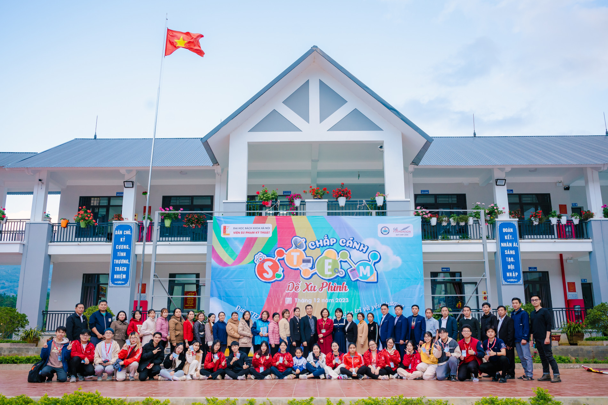
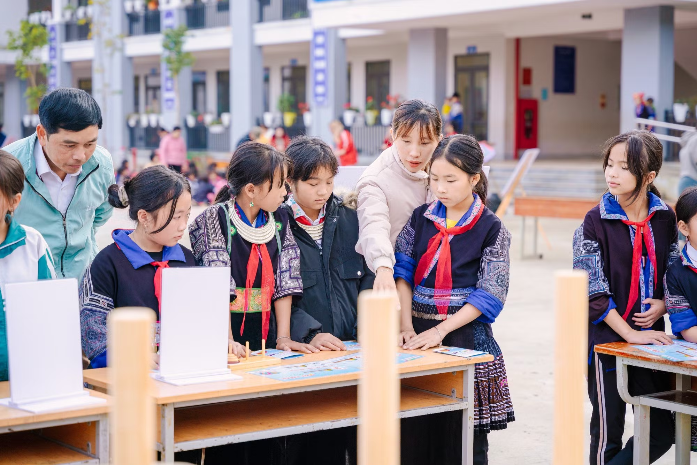
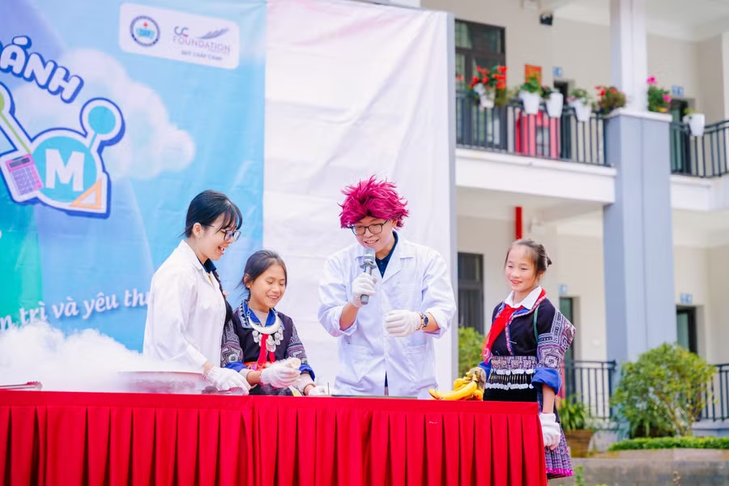

CHẮP CÁNH TRI THỨC
HÀNH TRÌNH GIEO MẦM STEM
TRÊN KHẮP MỌI MIỀN TỔ QUỐC
Từ những bản làng cheo leo nơi núi cao Tây Bắc đến những vùng quê ven biển miền Trung hay đồng bằng sông Cửu Long, hành trình Chắp cánh đã bền bỉ mang theo tri thức, công nghệ và niềm tin vào sức mạnh của giáo dục đến với hàng nghìn học sinh trên khắp Việt Nam. Được tài trợ và kết nối bởi Quỹ Chắp cánh (CC Foundation), cùng sự tham gia trực tiếp của Khoa Khoa học và Công nghệ Giáo dục, chương trình không chỉ trao tặng cơ hội học tập mà còn mang STEM và E-Learning đến với những nơi còn nhiều khó khăn, góp phần mở rộng cánh cửa tiếp cận tri thức và nuôi dưỡng những ước mơ tương lai cho thế hệ trẻ.

01 HÀNH TRÌNH BẮT ĐẦU TỪ KHÁT VỌNG THU HẸP KHOẢNG CÁCH GIÁO DỤC
Trong bối cảnh chuyển đổi số đang diễn ra mạnh mẽ, không phải địa phương nào cũng có điều kiện tiếp cận bình đẳng với các nguồn lực giáo dục hiện đại. Xuất phát từ thực tế đó, chương trình Chắp cánh được triển khai với mong muốn mang các mô hình học tập STEM, E-Learning và các hoạt động trải nghiệm công nghệ đến gần hơn với học sinh vùng sâu, vùng xa.
Trên hành trình ấy, sinh viên, giảng viên và các tình nguyện viên đã trở thành những "sứ giả tri thức", trực tiếp đến từng địa phương để tổ chức các lớp học STEM, xây dựng học liệu số, trao tặng thiết bị học tập và đồng hành cùng giáo viên trong việc ứng dụng công nghệ vào giảng dạy.

02 NHỮNG DẤU CHÂN TRÊN KHẮP MỌI MIỀN ĐẤT NƯỚC
Từ năm 2022 đến nay, hành trình Chắp cánh đã đi qua nhiều địa phương trên cả nước như Bố Trạch (Quảng Bình), Dế Xu Phình (Lào Cai), Lai Châu, Điện Biên Đông, Lang Chánh (Thanh Hóa) và Long Hữu - Duyên Hải (Vĩnh Long). Không chỉ dừng lại ở việc tổ chức các hoạt động trải nghiệm STEM, chương trình còn chú trọng hỗ trợ hạ tầng học tập số, xây dựng học liệu điện tử và tập huấn cho giáo viên địa phương. Đây là những nền tảng quan trọng giúp các trường học duy trì và phát triển hoạt động ứng dụng công nghệ trong dạy học sau khi dự án kết thúc.
Thông qua các dự án STEM và E-Learning, chương trình không chỉ mang đến những hoạt động trải nghiệm khoa học, công nghệ cho học sinh mà còn hỗ trợ xây dựng học liệu số, nâng cấp hạ tầng học tập và tập huấn giáo viên địa phương. Mỗi điểm đến đều ghi dấu bằng những câu chuyện đẹp về sự sẻ chia, tinh thần tình nguyện và nỗ lực đưa giáo dục hiện đại đến gần hơn với học sinh vùng khó khăn.

03 STEM VÀ E-LEARNING - CHÌA KHÓA MỞ RA CƠ HỘI MỚI
Điểm đặc biệt của Chắp cánh nằm ở việc kết hợp giữa hoạt động thiện nguyện với các giải pháp giáo dục hiện đại. Thay vì chỉ hỗ trợ vật chất, chương trình tập trung xây dựng năng lực lâu dài cho người học và nhà trường thông qua STEM và E-Learning.
Các hoạt động thực hành khoa học, thiết kế mô hình, lập trình cơ bản hay trải nghiệm công nghệ số giúp học sinh phát triển tư duy sáng tạo, kỹ năng giải quyết vấn đề và khả năng làm việc nhóm. Trong khi đó, việc hỗ trợ xây dựng học liệu điện tử và hướng dẫn giáo viên ứng dụng công nghệ đã góp phần thúc đẩy chuyển đổi số trong giáo dục tại các địa phương còn nhiều khó khăn.
04 DẤU ẤN CỦA SINH VIÊN CÔNG NGHỆ GIÁO DỤC
Đằng sau mỗi dự án Chắp cánh là sự đóng góp nhiệt huyết của các thế hệ sinh viên ngành Công nghệ Giáo dục. Từ việc khảo sát nhu cầu thực tế, thiết kế học liệu, xây dựng hoạt động STEM đến tổ chức triển khai tại địa phương, sinh viên được trực tiếp vận dụng kiến thức chuyên môn vào giải quyết những vấn đề thực tiễn của giáo dục.
Những chuyến đi không chỉ mang lại giá trị cho cộng đồng mà còn trở thành môi trường học tập trải nghiệm quý giá, giúp sinh viên rèn luyện kỹ năng chuyên môn, kỹ năng làm việc nhóm, quản lý dự án và trách nhiệm xã hội.

05 TIẾP TỤC HÀNH TRÌNH GIEO NHỮNG HẠT GIỐNG TRI THỨC
Qua nhiều năm triển khai, Chắp cánh đã vượt ra khỏi khuôn khổ của một dự án tình nguyện thông thường để trở thành một hành trình bền bỉ lan tỏa tri thức và cơ hội học tập. Mỗi điểm đến là một câu chuyện, mỗi lớp học là một niềm hy vọng và mỗi học sinh được tiếp cận STEM, E-Learning hôm nay có thể trở thành những người kiến tạo tương lai của địa phương trong ngày mai.
Hành trình ấy vẫn đang tiếp tục, mang theo khát vọng thu hẹp khoảng cách giáo dục, lan tỏa công nghệ và góp phần xây dựng một nền giáo dục công bằng, sáng tạo và giàu cơ hội cho mọi học sinh trên khắp Việt Nam.